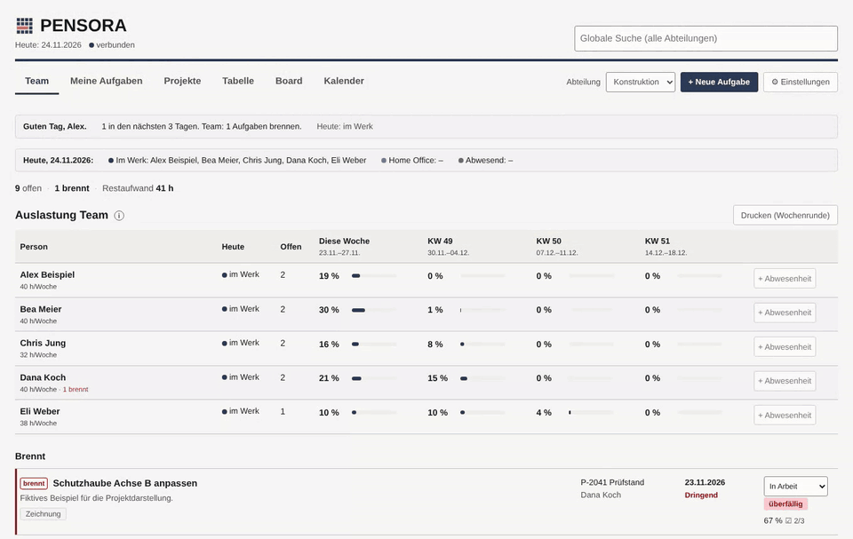
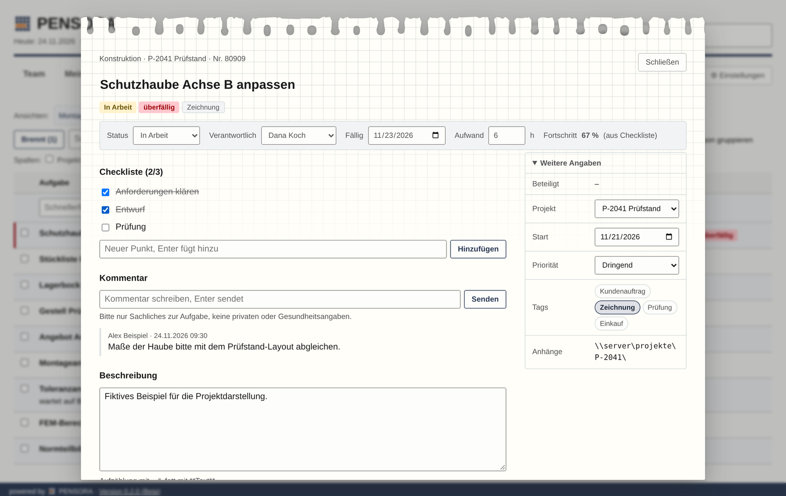
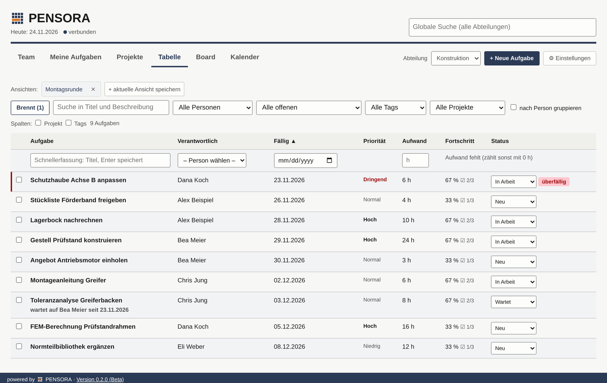
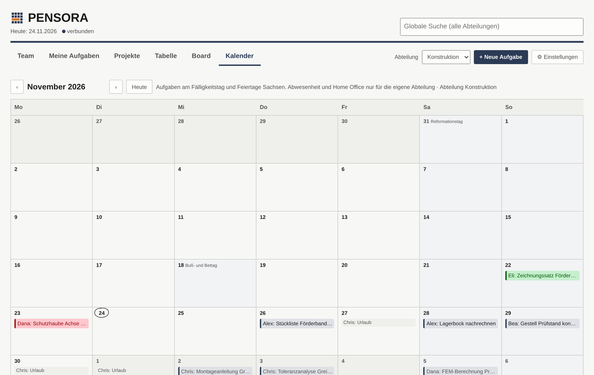
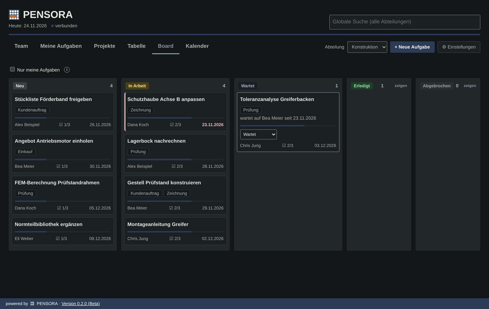

Wer arbeitet woran – und wie viel geht noch?Who is working on what – and how much capacity is left?
Quelloffener Aufgaben- und Kapazitätsplaner für Abteilungen. Lokal, ohne Server, ohne Cloud.Open-source task and capacity planner for departments. Local-first, no server, no cloud.
Auf GitHub ansehenView on GitHubSicherheitSecurity · SECURITY.md
Beta / in Entwicklung – noch nicht für den produktiven Einsatz mit echten Daten. Ohne Gewähr. Download mit Version 1.0.Beta / in development – not intended for productive use with real data yet. Provided without warranty. Download with version 1.0.
Demo mit erfundenen DatenDemo with fictitious data
FunktionenFeatures
Sicherheit und DatenschutzSecurity and privacy
Planungsdaten sind Firmendaten. PENSORA setzt deshalb auf etablierte, offen geprüfte Verfahren – keine eigene Kryptografie, keine Cloud, keine Telemetrie.Planning data is company data. PENSORA therefore relies on established, openly reviewed methods – no home-made cryptography, no cloud, no telemetry.
Ehrlich gesagt: Wer das Firmen-Kennwort kennt, kann die Daten lesen; ein gestohlener PC mit bekanntem Kennwort erfordert einen neuen Ordner. Alle Grenzen stehen im Admin-Handbuch. PENSORA ist nicht zertifiziert; die Einführung im Betrieb gehört mit Datenschutzbeauftragter und Betriebsrat abgestimmt.To be honest: anyone who knows the company password can read the data; a stolen PC with a known password requires a new folder. All limits are documented in the admin guide. PENSORA is not certified; introducing it at work should be agreed with your data protection officer and works council.
EinblickeScreenshots






Erfundene Beispieldaten.Fictitious example data.